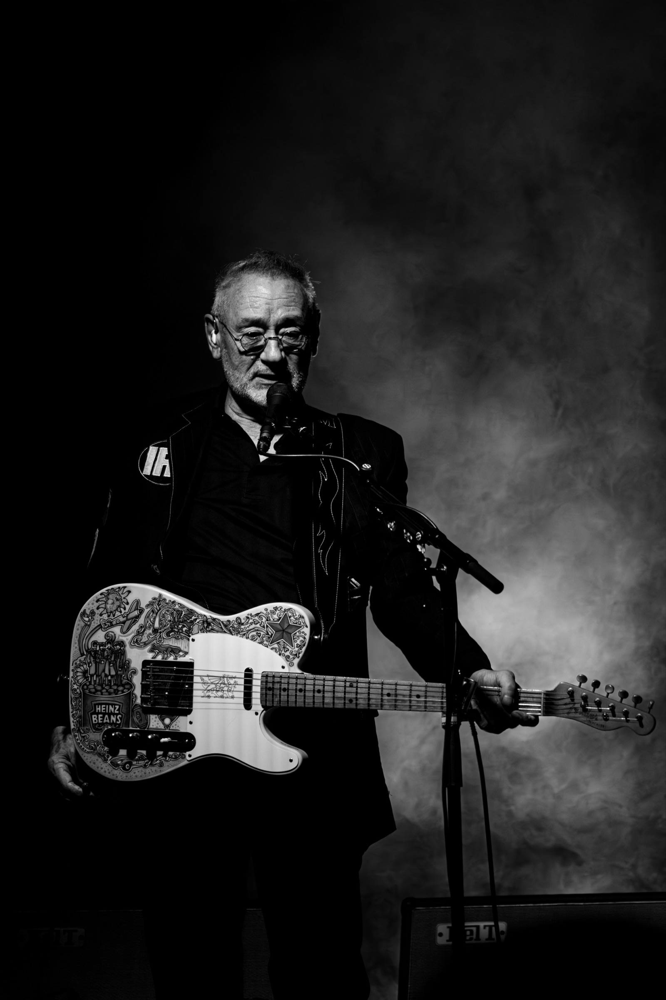
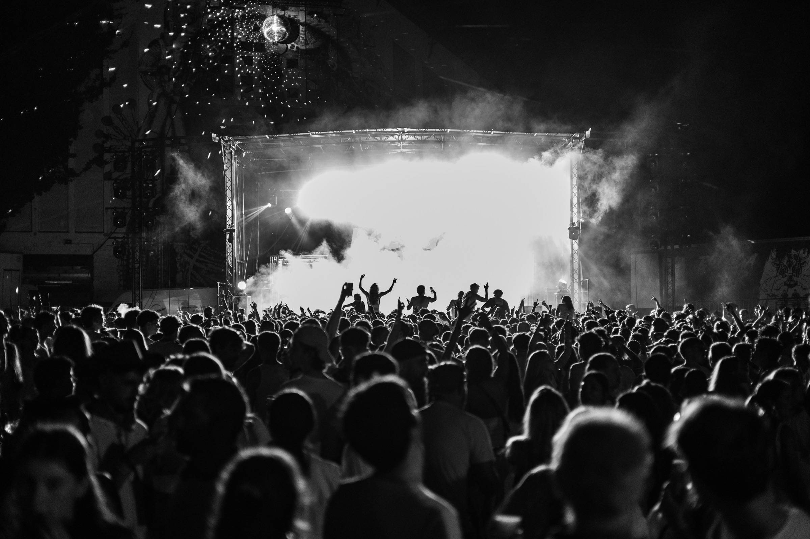

Photographie · Deux univers
La photographie, au plus près du réel.
Je photographie les personnes et les événements avec une attention portée aux gestes, aux échanges et à l’atmosphère.
Découvrir
01 · Une séance à votre image
Portraits
Une séance personnelle, professionnelle ou collective, préparée avec vous selon votre projet et vos disponibilités.
Découvrir les portraits
02 · Le récit d'un événement
Événementiel
Mariages, célébrations privées, anniversaires, événements professionnels ou culturels : je photographie l’ambiance, les temps forts et les rencontres.
Découvrir l'événementielProjet sur mesure
Un projet particulier ?
Parlons de votre séance ou de votre événement pour définir ensemble les images dont vous avez besoin.
Parlons de votre projet